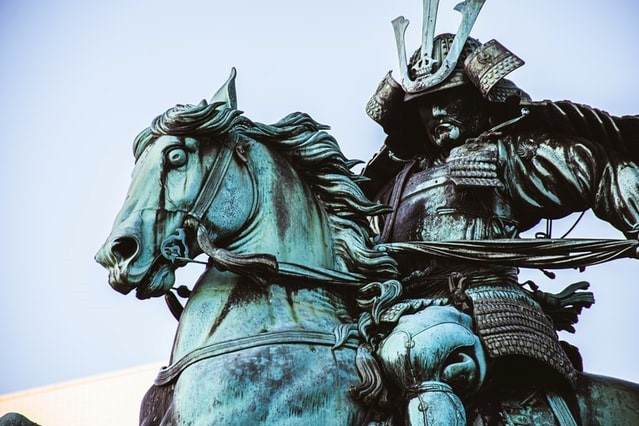
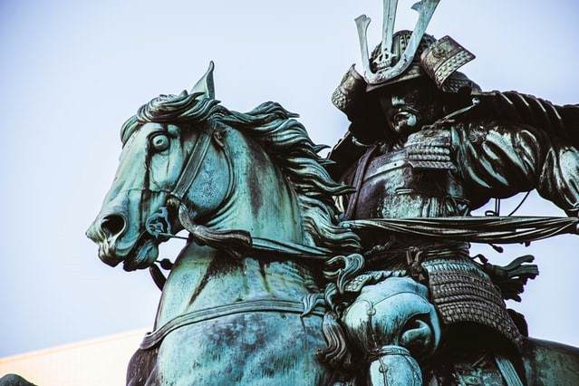

The game is played with three possible hand signals that represent a rock,
paper, and scissors. The rock is a closed fist; paper is a flat hand with
fingers and thumb extended and the palm facing downward; and scissors is a
fist with the index and middle fingers fully extended toward the opposing
player. Rock wins against scissors; paper wins against rock; and scissors
wins against paper. If both players throw the same hand signal, it is considered
a tie and play resumes until there is a clear winner.
The hand signals are given simultaneously by both players. The ritual used
to get players in sync with each other so they can deliver their throws simultaneously
is called the prime. This action requires retracting the player’s fist from full-arm
extension towards the shoulder and then back to full extension. To ensure a fair match
the players must be in sync with their primes. Players must determine before play how
many times they pump their arms during the prime phase, usually two or three times before
the final delivery of their thro
Finger-flashing games have been known to exist since ancient times, however,
the origins of the game remain obscure. The earliest known reference is found on a
wall painting in a tomb at the Beni Hasan burial site in Egypt that dates back to
around 2000 B.C. Centuries later on a Japanese scroll the game was also found.
Versions of the game are found in cultures around the world. It is still very
popular in Japan, where it is called jan-ken or jankenpon.
 
